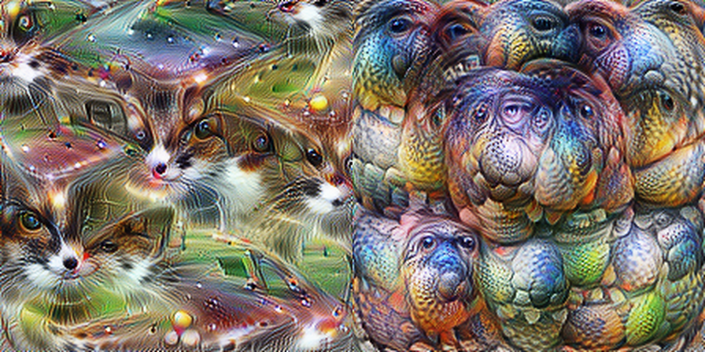
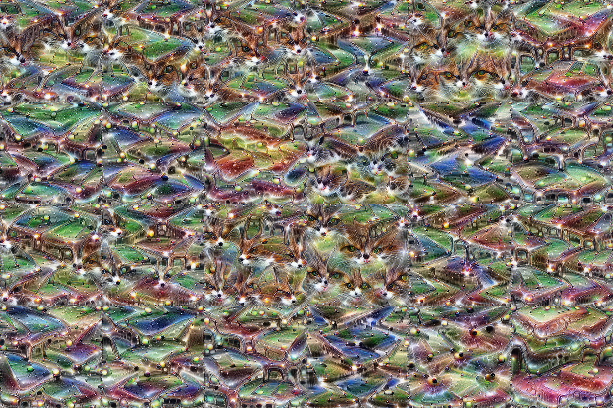
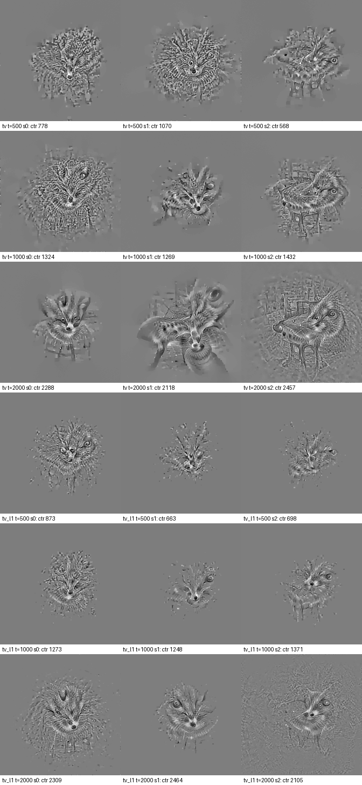
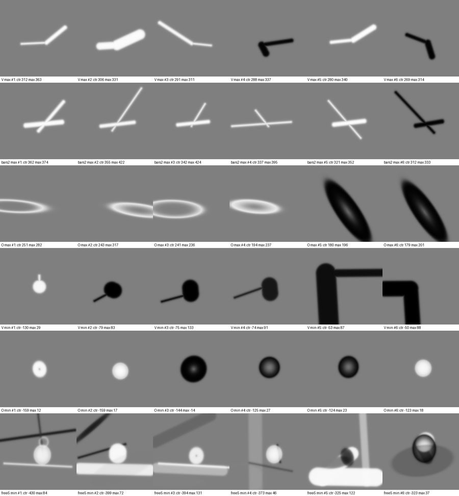

Is InceptionV1's 4e:55 a V-shape neuron?
The claim. Neuron mixed4e:55 is the textbook "polysemantic" neuron: it fires for cat faces and car fronts. Cammarata argues it is really one concept, a V-shape detector (pointed things drive it up, round things push it down), whatever the category.
The result. The strong claim fails. Round-faced cats and dogs drive the neuron about 4× more than pointed spires, candles and obelisks, and covering a fox's pointed ears does no more than covering the same area of its torso. Round things do push it down, more weakly than predicted. The positive side looks like two category routes (small-carnivore faces, vehicle fronts), not a V.
The fine print. The overall pre-registered verdict is mixed, because the shape-vs-texture test was inconclusive. Some groups are small, and the image labels came from AI raters, whose output was verified.
1. The claim being tested
In Feature Visualization (2017) and Zoom In (2020), 4e:55 was the standard example of a neuron that mixes unrelated things: cat faces and car fronts. The essay reinterprets it: "it's not a cat and car neuron, it's a V-shape neuron." Its evidence:
- The neuron's strongest input is a fox-snout neuron (4d:493). Wolf (4d:477) and head-on van (4d:201) neurons also feed it.
- Among the neurons that read it are a coyote-face neuron (5a:352), a candle-flame neuron (5a:94) and a martini-glass neuron (5a:317).
- Pointed images drive it up and round ones (clocks, balls, round dog faces) push it negative.
The worry is that this evidence was chosen by someone already looking for one explanation. So the test had two parts: an open-ended exploratory phase, then a pre-registered confirmatory phase on held-out images, with predictions fixed and hashed before any measurement.
2. Phase A: exploration
49,389 ImageNet validation images, the original Lucid InceptionV1 weights via Lucent, reading channel 55 of mixed4e before its ReLU. The 611-image pool held out for Phase B was never run here.
His circuit facts check out
- The fox input is real and dominant: weight 0.31, about 10 SD above typical inputs.
- The coyote neuron is the strongest reader.
- The flame and martini readers rank 26th and 21st. They were picked from a mixed list that also includes frogs, joysticks and laptops.
Round things really do sit at the bottom
Sorting all 49k images, the bottom of the ranking is mostly round: barometers, manhole covers, baseballs, lens caps and clocks. This is a prediction the essay could have failed, and it held.
The positive side is about category, not shape
- The top class is the flat-faced Persian cat.
- Pointed buildings (obelisk, church, spindle) rank 787th–953rd of 1,000, and still do when cropped tight.
- With the cat/fox inputs removed, the neuron becomes a vehicle detector, not a V detector.


Letting the neuron pick the simplest image
No shape vocabulary was imposed. Grayscale pixels were optimized to reach a fixed activation while keeping edges and "ink" to a minimum. Every solution was a furry fox- or cat-like face; none was a V.

Forced to choose among simple shapes, the optimizer prefers a V to an O (+76, CI [+54, +97]) but does no better than two crossing bars (−12, CI [−36, +11]). Every simple shape is weak next to real faces.

Why cars?
- About 75% of a car's activation comes in through the network's own van and car detectors.
- About 30% comes through the fox detector. That part isn't colour (it survives grayscale) and isn't a car "face": head-on cars drive it least, and it peaks on the windscreen and cabin. Exactly what it is remains unidentified.
3. Phase B: the pre-registered test
The design fixed three hypotheses, five tests and their numeric thresholds before measurement:
- H_V: pointedness drives it, whatever the category.
- H_routes: category routes with a mild within-category shape preference.
- H_category: category only.
The stimuli were:
- the held-out ImageNet pool plus ImageNet-V2 (10,000 new images the model had never seen here);
- shape × texture composites built from texture patches;
- ear-occlusion images.
Labels came from two AI raters (Claude Sonnet and Claude Opus) who knew nothing about the hypotheses. Every batch was machine-verified: each label had to match an image the rater had actually opened, and object names had to match a hidden key. Agreement was ρ = 0.88 for pointedness and κ = 0.79 for view.
All 653 stimuli, labels, logs and code were hashed into a freeze manifest (combined SHA-256 1afb4907…49f549) before the single run.
| Test | Result (95% CI) | Verdict |
|---|---|---|
| 1. Pointed objects vs. round faces 31 pointed objects, 71 round faces |
Round faces 639, pointed objects 159. Difference −479 [−565, −394] |
Against H_V |
| 2. Shape vs. texture 108 composites |
Partial R²: shape 0.42 [0.31, 0.71], texture 0.16 [0.13, 0.47]. V+triangle − disc+square +35 [+21, +48]; fur − other +8 [−6, +23] |
Inconclusive |
| 3. Round suppression | Natural: round − boxy −36 [−46, −26] (needed ≤ −50). Synthetic: disc − square −4.9 [−8.3, −1.6] |
Partial |
| 4. Ear occlusion 12 upright-eared sets |
Covering the ears vs. covering the same area of torso: median effect +0.02 [−0.10, +0.24] | H_category |
| 5. Car views (replication) | Three-quarter − head-on +158 [+80, +232] | Replicates |
Overall, by the frozen rule: mixed. Test 1 favours routes/category, Test 2 is inconclusive, and Test 4 favours category.
4. What it means
- "V-shape, regardless of category" does not hold. The two tests that separate shape from category most directly both go against it.
- The negative side is real but modest. Round things score lower than boxy ones, and discs lower than squares, but the natural-image gap fell short of the pre-registered size.
- One finding leans toward the essay, but it is small. Among abstract composites, shape matters more than texture, and V's score highest for every texture. With no category cues, a V is the best of these four shapes. But those composites reach at most 115, against 600+ for real faces and cars. This was not part of the pre-registered verdict.
The picture that fits everything: 4e:55 merges a small-carnivore-face route and a vehicle route, each with some shape preference inside its own category, plus suppression by round things. The original "cat + car" description was closer than the V reinterpretation, though "cat" should be widened to foxes, red pandas and fluffy dogs.
5. Limitations
- Small groups: 31 pointed objects (target 40), 12 ear-occlusion sets, and a single fox-fur texture source.
- AI raters, not people. Agreement between two AI models isn't the same as agreement between two people. A first AI-rater attempt failed (blocked image reads, invented labels) and was discarded; see the verification log.
- Design changes before the freeze, all recorded in the design doc:
- AI raters replaced human raters.
- Inpainted ear-shape edits failed and were replaced by occlusion.
- The texture patches and the untextured control were fixed.
- We don't know how the essay made its "generic" renders. The essay doesn't publish its rendering recipe, so its "pale spikes" images weren't reproduced.
6. Files
- Phase A findings (exploratory). Some image links inside point to files that aren't published, because they contain ImageNet photos.
- Phase B design and pre-registration, with every change and the freeze record.
- Phase B summary, the full report and raw activations.
- Labels, rater instructions, verification logs, stimulus lists, and all code.
ImageNet images and model weights aren't redistributed here. The stimulus lists name the ImageNet and ImageNet-V2 files, so the run can be reproduced with your own copies.